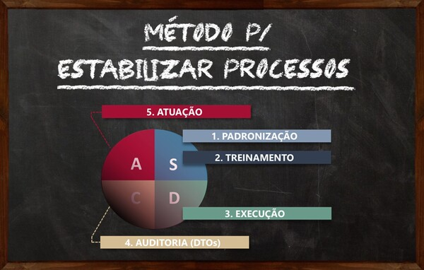
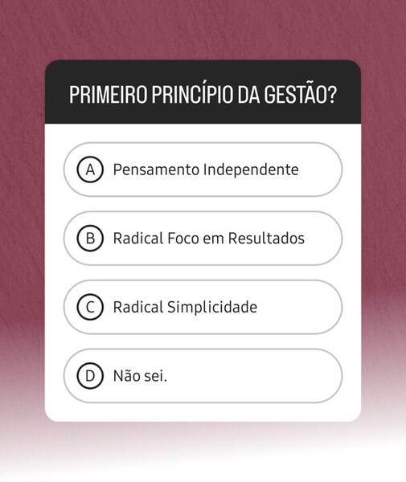
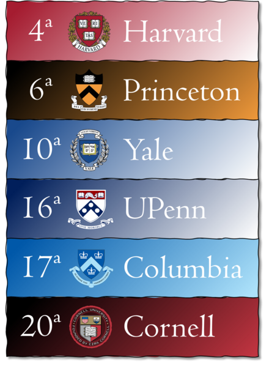
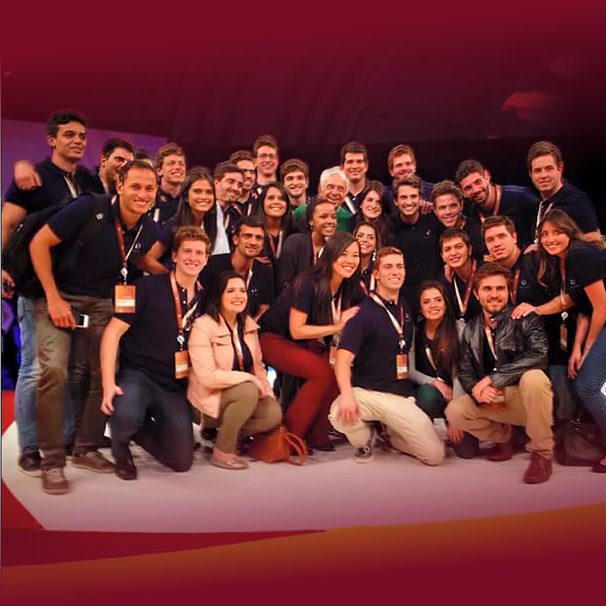
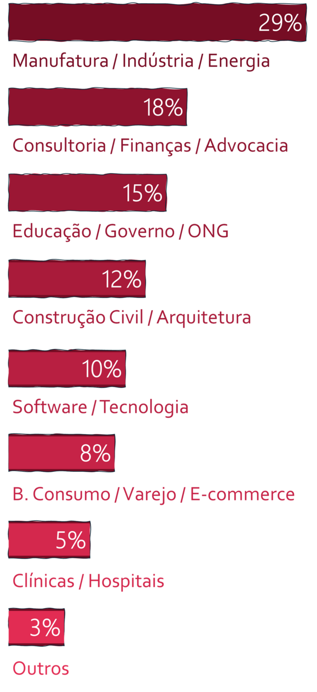
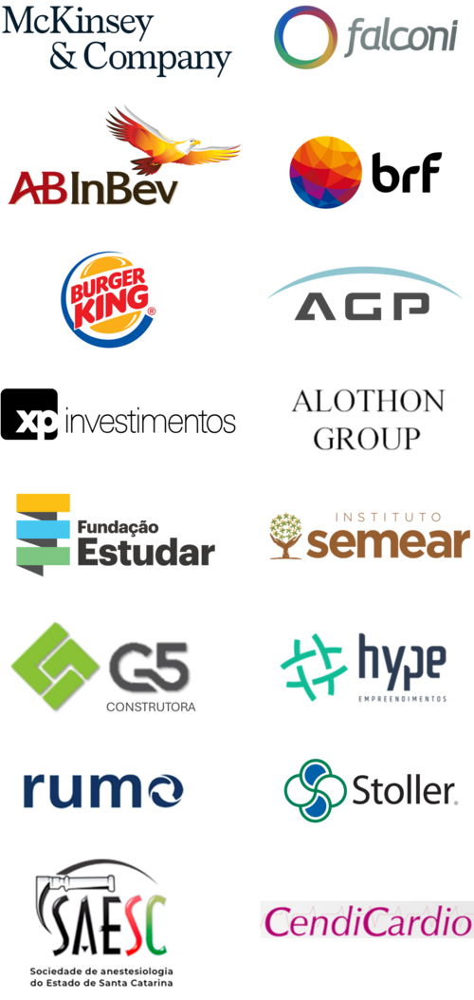
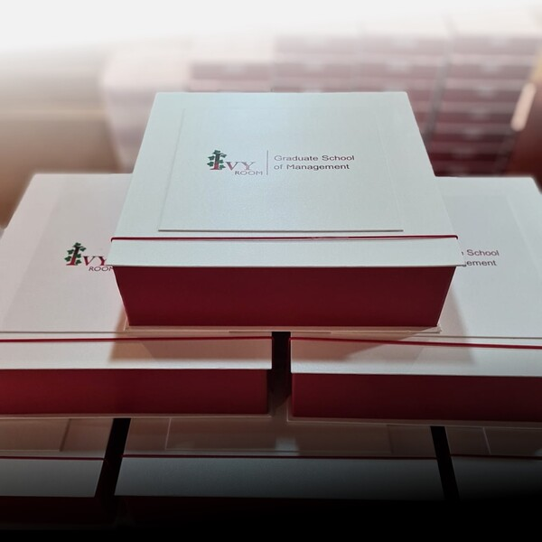

OS 3 PRINCIPAIS LIVROS PARA AUXILIAR NO SEU APRENDIZADO EM GESTÃO:
ENCONTRO FECHADO COM NOSSO FUNDADOR
(EXCLUSIVO 10 PRIMEIROS ALUNOS)
Os 10 PRIMEIROS ALUNOS terão acesso a um encontro fechado com 4h de duração, em que nosso fundador irá compartilhar DUAS LIÇÕES GERENCIAIS trazidas da HARVARD BUSINESS SCHOOL. Lições que, fora deste evento, só abrimos aos nossos clientes PJ com contratos acima de R$50.000.
SE O NOSSO CONTEÚDO DO INSTAGRAM TEM SIDO IMPORTANTE PARA VOCÊ, ENTÃO ESTA PÁGINA VAI TRANSFORMAR SUA CARREIRA.
AQUI VOCÊ VAI ENTENDER:
1
O QUE É GESTÃO GENERALISTA, A FASCINANTE CIÊNCIA POR TRÁS DOS NOSSOS POSTS.
2
O PAPEL QUE A HARVARD BUSINESS SCHOOL E DEMAIS UNIVERSIDADES IVY LEAGUE TIVERAM NO DESENVOLVIMENTO DESTA CIÊNCIA.
3
A DURA REALIDADE DO ENSINO EM NEGÓCIOS NO BRASIL E PORQUE VOCÊ NUNCA OUVIU FALAR DESTES ASSUNTOS.
4
O IMPACTO QUE APRENDER GESTÃO GENERALISTA TERÁ EM SUA CARREIRA E POR ONDE COMEÇAR.
OTIMIZE SEU TEMPO.
ENTENDA TUDO NESTE VÍDEO:
Tela Cheia
DEPOIS CLIQUE PARA ABRIR CADA SEÇÃO:
1
O QUE É GESTÃO GENERALISTA
1
O QUE É GESTÃO GENERALISTA
Se você ocupa um dos cargos abaixo e deseja construir uma carreira gerencial, leia com atenção. Vale a pena.
Você já deve ter notado que nossos posts no Instagram não vêm do acaso.
Existe uma fonte de conhecimento, um “algo maior”, que embasa nossas ideias.
Este algo maior é a Gestão Generalista.
Fazendo uma analogia:
Gestão Generalista é a verdadeira Gestão.
Como veremos na Seção 3, há 30 anos a palavra “gestão” é banalizada no Brasil.
Em nosso país, tudo é gestão. Falamos em gestão de pessoas, gestão financeira e até gestão de horário.
Mas Gestão de verdade, Gestão com letra maiúscula (a Gestão Generalista)...
É uma ciência!
Assim como Física e Química são ciências.
E isto importa para você porque:
Dominar Gestão Generalista é fundamental para quem deseja construir uma carreira gerencial.
Não só porque a Gestão resolve inúmeros problemas nas empresas. Mas porque, no Brasil, falta gente que domine o assunto. Mesmo. (Ver Seção 3)
Vamos por partes:
Gestão é o coração da Administração.
Administração é o todo. É tudo que uma empresa precisa para prosperar.
Fazem parte dela ciências de negócios como Marketing, Vendas e Contabilidade.
E ciências aplicadas. Como a Engenharia numa indústria, o Direito num escritório de advocacia e a Medicina num hospital.
E é a Gestão que direciona todas estas áreas na busca por resultados.
A Gestão tem três pilares:
• Equação Fundamental
• Princípios Basilares
• Método Gerencial (PDCA e SDCA)
Conceitos intimamente interligados e que formam, juntos, o Sistema de Gestão:
Cada porção deste sistema nos dá lógicas e ferramentas para enfrentar os desafios mais comuns ao dia a dia das empresas.
Por exemplo:
PROBLEMAS DE NATUREZA HUMANA
A Equação Fundamental nos guia sobre como nos relacionarmos com pessoas (chefes, pares e eventual equipe) para extrairmos o melhor de cada um.
A Radical Simplicidade nos estimula a não complicar o óbvio, buscando sempre a solução mais simples para um problema.
PROBLEMAS DE NATUREZA TÉCNICA
O PDCA, que é o Método Gerencial para melhorar resultados, orienta a construção de Indicadores, Metas e Planos de Ação que tragam transparência aos resultados e que tirem as coisas da inércia.

E o SDCA nos ensina a Padronizar e Automatizar processos. Sejam estes processos administrativos ou produtivos.
Além disso:
Gestão é Generalista.
Ou seja, Gestão pode e deve ser aplicada em todo tipo de empresa.
Para entender, vamos fazer uma analogia com a Matemática. Imagine uma padaria:
Este senhor precisa saber ao menos o básico de Matemática (soma, subtração, multiplicação e divisão), para controlar suas cobranças e estoques.
Agora pense na NASA:
Para levantar um foguete, os engenheiros precisam saber muita Matemática.
Só que o interessante é que:
A Matemática é a mesma na padaria e na NASA.
2 + 2 = 4 nos dois casos. O que muda é só a complexidade da Matemática necessária em cada situação.
Gestão é igual.
A Gestão numa padaria e na NASA é a mesma. O que muda é só a complexidade necessária em cada caso.
Achou interessante?
Entre na lista de espera para a próxima turma do Preparatório em Gestão Generalista.
Ou veja a Seção 4 para saber mais.
2
ORIGEM E DESENVOLVIMENTO
2
ORIGEM E DESENVOLVIMENTO
Sobre ombros de gigantes.
O Método Gerencial é a alma da Gestão.
Sua origem vem do Método Cartesiano de Descartes, publicado no Discurso do Método em 1637:
A obra estabelece a racionalidade como o instrumento básico da Gestão.
E o Pensamento Independente como seu primeiro princípio, ao entregar ao indivíduo a responsabilidade de pensar em busca da solução de um problema.
Penso, logo existo.
O Método foi aprimorado por gestores e pesquisadores ao redor do mundo, com protagonismo histórico no século XX:
Entenda a dimensão do Método Gerencial.
Quando os EUA entraram na 2ª Guerra, o presidente Roosevelt decretou que toda a indústria americana fosse convertida à produção de armamentos:
Era um desafio monumental.
Liderado por Deming, o comitê de guerra emergencial levou o Método a dezenas de milhares de fábricas em todo os EUA.
Trabalho que garantiu o abastecimento bélico dos países Aliados e viabilizou, por consequência, a queda do nazifascismo.
Ivy League, a mola propulsora da Gestão.
Antes da guerra, Deming estudou em Yale.
Yale faz parte da Ivy League, o grupo de universidades de maior prestígio no mundo (e que inspira o nome da nossa escola), do qual também fazem parte Harvard, Princeton, Cornell e Columbia.
As Ivies ficam na Nova Inglaterra, a região nordeste dos Estados Unidos:
Desde o início do século XX, as escolas de negócio destas universidades se tornaram molas propulsoras da Gestão.
Departamentos inteiros, programas de MBA e PhDs surgiram ao redor do tema.
Programas que formaram pensadores da Gestão como William Deming e Michael Porter e empresários como Elon Musk, Jeff Bezos e Warren Buffett.
Na vanguarda deste trabalho esteve a:
O ensino de Gestão Generalista é central ao curriculum do MBA da HBS desde sua fundação, em 1908.
Com o passar do tempo, Harvard criou um modelo de ensino gerencial próprio por meio de estudos de caso reais... O chamado Case Method.
E um importante aluno da escola foi:
O bilionário Ray Dalio concluiu seu MBA em Harvard em 1973 e tornou-se então uma referência em Gestão Generalista.
Seu recente livro Princípios trouxe novos ângulos aos Princípios Basilares e às relações humanas na Gestão.
O livro é bibliografia obrigatória ao Preparatório da Ivy e resume de forma singular a evolução da Gestão no tempo:
Gestão: origem antiga, presença histórica, aplicação mais atual do que nunca.
Achou interessante?
Entre na lista de espera para a próxima turma do Preparatório em Gestão Generalista.
Ou veja a Seção 4 para saber mais.
3
REALIDADE BRASILEIRA
3
REALIDADE BRASILEIRA
das pessoas não sabem o básico sobre Gestão.
Recentemente fizemos uma sequência de stories chamada “Raio-X da Gestão”.
Foram 10 perguntas simples, como esta:

Mais de 10.000 seguidores participaram.
O resultado?
99,6% das pessoas acertaram menos da metade das perguntas.
E este não é um fato isolado. Desde 2018 nossas pesquisas têm números similares.
Entenda porque isto acontece:
O Brasil não tem nenhuma universidade dentre as 200 melhores do mundo.
A melhor universidade brasileira no Times Higher Education é a USP, que ocupa hoje a posição #250 no ranking.
Enquanto isso os EUA, por exemplo, têm 13 das 20 melhores universidades. Das quais 6 são Ivy League (ver Seção 2):

Isto no nível de graduação.
Se olhamos para o ensino de negócios (MBA e PhD) e de Gestão, as posições do Brasil caem exponencialmente. Ou seja:
No Brasil, o ensino de Gestão Generalista é praticamente inexistente.
Mas será que isto é ruim?
Por um lado, obviamente sim. A falta de maturidade gerencial impacta carreiras, empresas e toda a economia brasileira.
Porém, esta escassez de conhecimento também cria excelentes oportunidades.
E a primeira pessoa a perceber isto foi...
Na década de 60, o Falconi fez PhD nos EUA, para aprender a Gestão de Deming.
E a partir daí, liderou a maior consultoria em Gestão do Brasil (a FALCONI) levando o Método Gerencial para empresas como Petrobras, AB Inbev, Gerdau e Sadia.
Embora o trabalho do Falconi tenha sido relevante, este foi só um pontapé na disseminação da Gestão em nosso país.
O caráter consultivo, não educacional, da FALCONI deu acesso ao Método somente à alta gerência de suas empresas cliente.
O que nos traz de volta à escassez...
Destacar-se no Brasil é fácil. Basta o conhecimento certo.
Na natureza (e no mercado de trabalho), nada supera a Lei de Oferta e Demanda.Como falta gente bem preparada e sobram empresas buscando melhores resultados, existe oportunidade para...
Você aprender Gestão e se destacar de forma natural, seguindo a lei de mercado.
E aqui entra o nosso papel:
Achou interessante?
Entre na lista de espera para a próxima turma do Preparatório em Gestão Generalista.
Ou veja a Seção 4 para saber mais.
4
PREPARATÓRIO EM GESTÃO GENERALISTA
4
PREPARATÓRIO EM GESTÃO GENERALISTA
O conhecimento em Gestão e a metodologia de ensino Ivy League, em suas mãos.
O Preparatório da Ivy entrega tudo que você precisa para dominar Gestão Generalista e crescer na carreira.
Entenda:
Lastro de verdade.
No Preparatório você aprenderá Gestão diretamente com o nosso fundador.
O Lucas é formado com menção honrosa em Eng. Mecânica na UTFPR e, em 2013, conquistou uma bolsa integral para cursar Eng. Aeroespacial em Cornell (ver Seção 2):
Em Cornell, obteve Dean’s Honor List por excelente desempenho acadêmico. E, no mesmo período, iniciou sua trajetória na Gestão como estagiário de Ger. Projetos num acelerador de partículas em NY.
Nutrindo interesse genuíno pelo tema, em 2015, nosso fundador voltou ao Brasil para ser trainee e então consultor em Gestão na FALCONI (ver Seção 3):

Nesta fase, aos 26 anos, assumiu seu primeiro cargo gerencial e a seleção e treinamento de trainees... Experiência que serviu de gatilho à fundação da Ivy.
Ao todo, antes de empreender, nosso fundador atuou em projetos de:
Projetos que geraram US$ 100 milhões em resultados auditados junto à B3.
E, em 2019, publicou um artigo na Harvard Business School Online, compartilhando os passos iniciais da Ivy.
A publicação foi um reconhecimento ao nosso fundador pela obtenção da maior média histórica dentre 30.000 alunos (aprovação com High Honors) em uma certificação em negócios da HBS.
Entrega de excelência.
Desde 2018, o Preparatório em Gestão Generalista é nossa única entrega.
Atualmente, o Prep. está na 12ª versão, tendo sido melhorado continuamente a partir dos feedbacks de 400 ex-alunos.
RESULTADOS QUANTITATIVOS
Alunos do Prep. crescem até 3x mais rápido e, em média, 2 anos antes*:
Tempo até Cargo Gerencial**
*Dados aproximados. Estudo estatístico complexo e em andamento. Conclusão prevista para 2028.
**Considera cargos de Supervisão e Coordenação.
Nossos alunos avaliam ainda nove atributos do Preparatório, como Aplicabilidade Prática e Clareza na Comunicação, consolidados num...
Feedback Médio*
*Considera a 12ª versão do Preparatório. Número de alunos participantes: 109.
RESULTADOS QUALITATIVOS
Veja abaixo depoimentos incríveis dos nossos ex-alunos, divididos em 3 temas:
• Impacto na carreira (00:00)
• Impacto na empresa (03:08)
• Dicas para você (06:26)
Tela Cheia
Gestão é para você.
O Preparatório não é só para gestores.
O serviço é pensado para quem deseja construir uma carreira gerencial.
Por isto, temos uma faixa de cargos que consideramos ideal para nossos alunos.
Porém, não temos pré-requisitos para áreas de formação nem de atuação.
Veja as estatísticas dos nossos alunos:
Cargo
(ao iniciar o Preparatório)
Cargo
(ao iniciar o Preparatório)
Área de Formação
(no ensino superior)
Área de Formação
(no ensino superior)
Área de Atuação
Área de Atuação

Porte da Empresa Empregadora
(# Funcionários)
Maiores Empregadoras

Flexibilidade e objetividade.
O Prep. é pensado para quem trabalha em período integral e precisa equilibrar mil coisas ao mesmo tempo (trabalho, família, lazer e estudo).
Por isto, o serviço tem duas partes:
• Plataforma Online: disponível 24h. Dá acesso a vídeos com conteúdos, cases e ferramentas para download.
• Atendimentos ao Vivo: para dúvidas. Acontecem 2x por mês, em pequenas turmas via Microsoft Teams. Sempre com a participação do Lucas.
Além disso cada palavra do Preparatório vai direto ao ponto. Por isto, com 4h a 5h de estudo semanal, o Prep. pode ser finalizado em 2 meses...
Embora o tempo total de acesso ao serviço seja de 1 ano (para que você possa ver e rever o material com calma).

Prática. Prática. Prática.
O serviço é dividido em 7 módulos e tem por base uma ampla bibliografia.
Nós utilizamos o Case Method da HBS (ver Seção 2) para ensinar Gestão por meio de estudos de caso reais e do uso de softwares na solução de problemas.
Além disso, você receberá uma caixa de materiais impressos em seu endereço, contendo:
• Uma apostila por módulo.
• Um compilado com todos os cases.
• Guias para obter resultados rápidos.
Reconhecimento e oportunidades.
Ao final de cada módulo do Preparatório há um teste. Considerando sua média global você é elegível a:
• 70%: certificado impresso e eletrônico (LinkedIn).
• 90%: duas cartas de recomendação para MBA, Mestrado ou PhD no Brasil ou no exterior (português ou inglês), escritas por nosso fundador.
• 95%: certificado c/ menção honrosa.
• 100%: inclusão na base de potenciais contratações ao time da Ivy.
Risco zero.
Ao entrar na turma, seu acesso ao serviço é imediato.
Oferecemos ainda formas de pagamento flexíveis (incluindo Boleto, PIX, Cartão, PIX + Cartão, ou Dois Cartões), e parcelamento em até 12x.
Além de 30 dias de garantia, para você investir em sua carreira com risco zero.
$
R$1.990,00 à vista
ou até 12x de R$193,83*
L
Acesso imediato.
✓
Garantia de 30 dias
Turma Especial de Black Friday abre 28/nov às 23:59